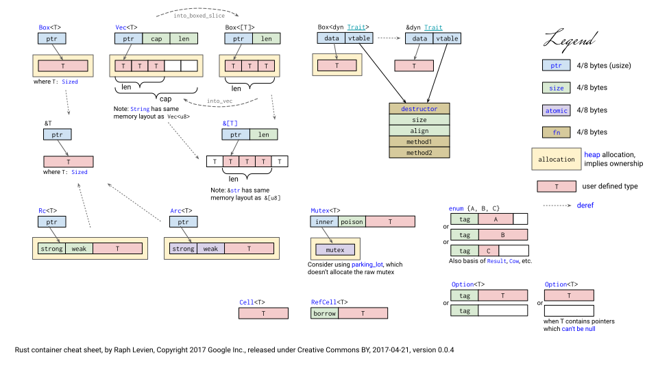

Rust
Basics
| Rust | |
|---|---|
Standard Output
Standard Input
The :: syntax in the ::new line indicates that new is an associated function of the String type.
An associated function is implemented on a type rather than on a particular instance of the type. Some languages call this a static method.
Variables & Mutability
By default variables are immutable.
| Rust | |
|---|---|
Shadowing
It's possible declare a new variable with the same name as a previous variable, and the new variable shadows the previous variable.
By using let, it's possible to perform a few transformations on a value but have the variable be immutable after those transformations have been completed.
The other difference between mut and shadowing is that because we're effectively creating a new variable when we use the let keyword again,
we can change the type of the value but reuse the same name.
Data Types
Integer Types
| Length | Signed | Unsigned |
|---|---|---|
| 8-bit | i8 |
u8 |
| 16-bit | i16 |
u16 |
| 32-bit | i32 |
u32 |
| 64-bit | i64 |
u64 |
| 128-bit | i128 |
u128 |
| architecture | isize |
usize |
Explicit Mathematical Operations (Integers)
| Rust | |
|---|---|
Note: analogous method exist for other mathematical operation
Floating-Point Types
Rust also has two primitive types for floating-point numbers, which are numbers with decimal points.
Rust's floating-point types are f32 and f64, which are 32 bits and 64 bits in size, respectively.
The default type is f64 because on modern CPUs it's roughly the same speed as f32 but is capable of more precision.
Numeric & Byte Literals
Numeric Base Prefix:
0x: Hexadecimal Number0o: Octal Number0b: Binary Number
Note: Number can have
_interposed for legibility (E.g:1_000_u64)
Binary Literals:
b'\'',b'\1',b'\n',b'\r',b'\t': Escaped charactersb'<C>': Byte whose value is the ASCII character<C>b'\x<HH>': Byte whose value is the hexadecimal<HH>
Numeric Operators
| Operator | Operation |
|---|---|
> |
Greater than |
>= |
Greater or Equal to |
< |
Less than |
<= |
Less or Equal to |
== |
Equals |
!= |
Not Equals |
Comparison Operators
| Operator | Operation |
|---|---|
+ |
Addition |
- |
Subtraction |
* |
Multiplication |
/ |
Division |
% |
Modulo |
Boolean Types
Boolean types in Rust have two possible values: true and false.
Booleans are one byte in size. The Boolean type in Rust is specified using bool.
Bitwise Operators
| Operator | Operation |
|---|---|
& |
AND |
| |
OR |
&& |
SHORT-CIRCUIT AND |
|| |
SHORT-CIRCUIT OR |
^ |
XOR |
! |
NOT |
<< |
LEFT SHIFT |
>> |
RIGHT SHIFT |
Character Types
Rust's char type is the language's most primitive alphabetic type.
Rust's char type is four bytes in size and represents a Unicode Scalar Value: range from U+0000 to U+D7FF and U+E000 to U+10FFFF inclusive.
| Rust | |
|---|---|
String Types
Tuple Types
A tuple is a general way of grouping together a number of values with a variety of types into one compound type.
Tuples have a fixed length: once declared, they cannot grow or shrink in size.
| Rust | |
|---|---|
Array Types
Every element of an array must have the same type. Arrays in Rust have a fixed length, like tuples.
An array isn't as flexible as the vector type, though. A vector is a similar collection type provided by the standard library that is allowed to grow or shrink in size.
Slice Types (&[T], &mut [T])
Slices allows to reference a contiguous sequence of elements in a collection rather than the whole collection. Slices don't take ownership.
A mutable slice &mut [T] allows to read and modify elements, but can’t be shared;
a shared slice &[T] allows to share access among several readers, but doesn’t allow to modify elements.
&String can be used in place of a &str (string slice) trough String Coercion. The &String gets converted to a &str that borrows the entire string.
The reverse is not possible since the slice lacks some information about the String.
Note: When working with functions is easier to always expect a
&strinstead of a&String.
| Rust | |
|---|---|
Type Aliases
| Rust | |
|---|---|
Functions
Rust code uses snake_case as the conventional style for function and variable names.
Function definitions in Rust start with fn and have a set of parentheses after the function name.
The curly brackets tell the compiler where the function body begins and ends.
Rust doesn't care where the functions are defined, only that they're defined somewhere.
| Rust | |
|---|---|
Control Flow
if, else-if, else
let if
| Rust | |
|---|---|
if-let
| Rust | |
|---|---|
loop
while, while-let
for
Range
| Rust | |
|---|---|
break & continue
Ownership
Ownership is Rust's most unique feature, and it enables Rust to make memory safety guarantees without needing a garbage collector.
All programs have to manage the way they use a computer's memory while running.
Some languages have garbage collection that constantly looks for no longer used memory as the program runs; in other languages, the programmer must explicitly allocate and free the memory.
Rust uses a third approach: memory is managed through a system of ownership with a set of rules that the compiler checks at compile time.
None of the ownership features slow down your program while it's running.
Stack & Heap
Both the stack and the heap are parts of memory that are available to your code to use at runtime, but they are structured in different ways.
The stack stores values in the order it gets them and removes the values in the opposite order. This is referred to as last in, first out.
Adding data is called pushing onto the stack, and removing data is called popping off the stack.
All data stored on the stack must have a known, fixed size. Data with an unknown size at compile time or a size that might change must be stored on the heap instead.
The heap is less organized: when you put data on the heap, you request a certain amount of space. The memory allocator finds an empty spot in the heap that is big enough, marks it as being in use, and returns a pointer, which is the address of that location. This process is called allocating on the heap and is sometimes abbreviated as just allocating.
Pushing to the stack is faster than allocating on the heap because the allocator never has to search for a place to store new data; that location is always at the top of the stack.
Comparatively, allocating space on the heap requires more work, because the allocator must first find a big enough space to hold the data and then perform bookkeeping to prepare for the next allocation.
Accessing data in the heap is slower than accessing data on the stack because you have to follow a pointer to get there. Contemporary processors are faster if they jump around less in memory.
Keeping track of what parts of code are using what data on the heap, minimizing the amount of duplicate data on the heap, and cleaning up unused data on the heap so you don't run out of space are all problems that ownership addresses.
Ownership Rules
- Each value in Rust has a variable that's called its owner.
- There can only be one owner at a time.
- When the owner goes out of scope, the value will be dropped.
Moving, Cloning & Copying data
A "shallow copy" of a variable allocated on the heap causes the original variable goes out of scope and only the "copy" remains (MOVING).
A "deep copy" (var.clone()) makes a copy of the data in the new variable without make the original fall out of scope (CLONING).
When a variable goes out of scope, Rust calls the special function drop, where the code to return/free the memory is located.
Rust has a special annotation called the Copy trait that it's placeable on types that are stored on the stack.
If a type has the Copy trait, an older variable is still usable after assignment.
Copies happen implicitly, for example as part of an assignment y = x. The behavior of Copy is not overloadable; it is always a simple bit-wise copy.
Cloning is an explicit action, x.clone(). The implementation of Clone can provide any type-specific behavior necessary to duplicate values safely.
Rust won't allow to annotate a type with the Copy trait if the type, or any of its parts, has implemented the Drop trait.
| Rust | |
|---|---|
Ownership & Functions
The semantics for passing a value to a function are similar to those for assigning a value to a variable. Passing a variable to a function will move or copy, just as assignment does.
Return Values & Scope
Returning values can also transfer ownership.
References, Raw Pointers & Borrowing
Reference types:
&T: immutable (aka shared) reference, admits multiple references at the same time, (Read-Only, implementsCopy)&mut T: mutable reference, there can be only one
Raw Pointers types:
*mut T* const T
As long as there are shared references to a value, not even its owner can modify it, the value is locked down.
Similarly, if there is a mutable reference to a value, it has exclusive access to the value;
it's not possible to use the owner at all, until the mutable reference goes away.
Note: raw pointers can be used only in
unsafeblock. Rust doesn't track the pointed value
Mutable references have one big restriction: it's possible to have only one mutable reference to a particular piece of data in a particular scope.
The benefit of having this restriction is that Rust can prevent data races at compile time.
A data race is similar to a race condition and happens when these three behaviors occur:
- Two or more pointers access the same data at the same time.
- At least one of the pointers is being used to write to the data.
- There's no mechanism being used to synchronize access to the data.
The . operator can implicitly borrow or dereference a reference
| Rust | |
|---|---|
Note: arithmetic expressions can "see through" one level of references.
Note: comparison affect the final value of a reference chain. To compare references directly usestd::ptr::eq
Structs
A struct, or structure, is a custom data type that allows to name and package together multiple related values that make up a meaningful group.
To define a struct enter the keyword struct and name the entire struct.
A struct's name should describe the significance of the pieces of data being grouped together.
Then, inside curly brackets, define the names and types of the pieces of data, which we call fields.
| Rust | |
|---|---|
To use a struct after defining it, create an instance of that struct by specifying concrete values for each of the fields.
Field Init Shorthand
| Rust | |
|---|---|
Note: the entire instance must be mutable; Rust doesn't allow to mark only certain fields as mutable.
Struct Update Syntax
| Rust | |
|---|---|
Tuple Structs
Use Tuple Structs to create different types easily.
To define a tuple struct, start with the struct keyword and the struct name followed by the types in the tuple.
Struct Printing
| Rust | |
|---|---|
Associated Functions & Type-Associated Functions (aka Methods)
Associated Consts
Traits
A Trait is a collection of methods representing a set of behaviours necessary to accomplish some task.
Traits can be used as generic types constraints and can be implemented by data types.
Fully Qualified Method Calls
| Rust | |
|---|---|
Note: fully qualified method calls also works with associated functions
Derive Traits
The Rust compiler is able to provide a basic implementation of a trait with the derive attribute.
Derivable Traits:
EqPartialEqOrdPartialOrdCloneCopyHashDefaultDebug
| Rust | |
|---|---|
Trait Bounds
Trait Bound are used to require a generic to implement specific traits and guarantee that a type will have the necessary behaviours.
Trait Extensions
| Rust | |
|---|---|
Generic Structs & Methods
Generic Data Types are abstract stand-ind for concrete data types or other properties.
They can be used with structs, functions, methods, etc.
Rust accomplishes this by performing monomorphization of the code that is using generics at compile time.
Monomorphization is the process of turning generic code into specific code by filling in the concrete types that are used when compiled.
For this reason if a function as a trait as return type (trait bound), only a single type that implements the trait can be returned.
Note: the calling code needs to import your new trait in addition to the external type
Associated Types
Associated types connect a type placeholder with a trait such that the trait method definitions can use these placeholder types in their signatures.
The implementor of a trait will specify the concrete type to be used instead of the placeholder type for the particular implementation.
The type Item is a placeholder, and the next method’s definition shows that it will return values of type Option<Self::Item>. Implementors of the Iterator trait will specify the concrete type for Item, and the next method will return an Option containing a value of that concrete type.
Note: if the type is generic then then they are called generic associated types
Generic Traits vs Associated Types
The difference is that when a trait has a generic parameter, it can be implemented for a type multiple times, changing the concrete types of the generic type parameters each time.
With associated types, it's not possible to implement the trait multiple times so annotations are not needed.
Associated types also become part of the trait’s contract: implementors of the trait must provide a type to stand in for the associated type placeholder.
Associated types often have a name that describes how the type will be used, and documenting the associated type in the API documentation is good practice.
Trait Objects
A reference to a trait is called a Trait Object. Like any other reference, a trait object points to some value, it has a lifetime, and it can be either mut or shared.
What makes a trait object different is that Rust usually doesn’t know the type of the referent at compile time.
So a trait object includes a little extra information about the referent’s type.
In memory, a trait object is a fat pointer consisting of a pointer to the value, plus a pointer to a table representing that value’s type.
Note: Rust automatically converts ordinary references into trait objects when needed
| Rust | |
|---|---|
This works differently from defining a struct or function that uses a generic type parameter with trait bounds.
A generic type parameter can only be substituted with one concrete type at a time, whereas trait objects allow for multiple concrete types to fill in for the trait object at runtime.
| Rust | |
|---|---|
If homogeneous collections are needed, using generics and trait bounds is preferable because the definitions will be monomorphized at compile time to use the concrete types.
The code that results from monomorphization uses static dispatch, which is when the compiler knows what method will be called at compile time.
This is opposed to dynamic dispatch, which is when the compiler can't tell at compile time which method will be called. At runtime Rust uses the pointers inside the trait object to know which method to call. There is a runtime cost when this lookup happens that doesn't occur with static dispatch.
Dynamic dispatch also prevents the compiler from choosing to inline a method's code, which in turn prevents some optimizations.
It's only possible to make object-safe traits into trait objects. A trait is object safe if all the methods defined in the trait have the following properties:
- The return type isn't
Self. - There are no generic type parameters.
Lifetimes
Lifetime annotation indicates to the borrow checker that the lifetime of the returned value is as long as the lifetime of the referenced value.
The annotation does not affect how long the references live.
In case of different lifetimes the complier will use the most restrictive.
Lifetime Elision Rules
The Lifetime Elision Rules are a set of rules for the compiler to analyze references lifetimes.
They describe situations that do not require explicit lifetime annotations.
- Rule 1: Each input parameter that is a reference is assigned it's own lifetime
- Rule 2: If there is exactly one input lifetime, assign it to all output lifetimes
- Rule 3: If there is a
&selfor&mut selfinput parameter, it's lifetime will be assigned to all output lifetimes
Enums
Match Expressions
A match expression is made up of arms. An arm consists of a pattern and the code that should be run if the value given to the beginning of the match expression fits that arm's pattern. Rust takes the value given to match and looks through each arm's pattern in turn.
Note:
matcharms must be exhaustive for compilation.
| Rust | |
|---|---|
Pattern Matching
| Pattern | Example | Notes |
|---|---|---|
| Literal | 100 |
Match exact value or const name |
| Range | x..=y |
Match any value in range, including end |
| Wildcard | _ |
Match any value and ignore it |
ref Variable |
ref field |
Borrow reference of matched variable |
| Variable | count |
Match any value and copy it to variable |
| Bind with syb-pattern | variable @ <pattern> |
Match pattern and copy to variable |
| Enum | Some(value) |
|
| Tuple | (key, value) |
|
| Array | [first, second, third] |
|
| Slice | [first, .., last] |
|
| Struct | Point { x, y, .. } |
|
| Reference | &value |
|
| Multiple Patterns | 'a' \| 'A' |
match, if let, while let only |
| Guard Expression | <pattern> if <condition> |
match only |
Note:
..in slices matches any number of elements...in structs ignores all remaining fields
Patterns that always match are special in Rust. They’re called irrefutable patterns, and they’re the only patterns allowed in let, in function arguments, after for, and in closure arguments.
A refutable pattern is one that might not match, like Ok(x). Refutable patterns can be used in match arms, because match is designed for them: if one pattern fails to match, it’s clear what happens next.
Refutable patterns are also allowed in if let and while let expressions:
Error Handling
Option & Result
The Option type is used in many places because it encodes the very common scenario in which a value could be something or it could be nothing. Expressing this concept in terms of the type system means the compiler can check whether you've handled all the cases you should be handling; this functionality can prevent bugs that are extremely common in other programming languages.
Result<T, E> is the type used for returning and propagating errors. It is an enum with the variants, Ok(T), representing success and containing a value, and Err(E), representing error and containing an error value.
Ending an expression with ? will result in the unwrapped success (Ok) value, unless the result is Err, in which case Err is returned early from the enclosing function.
? can only be used in functions that return Result because of the early return of Err that it provides.
Note: When
Noneis used the type ofOption<T>must be specified, because the compiler can't infer the type that theSomevariant will hold by looking only at aNonevalue. Note: error values that have the?operator called on them go through thefromfunction, defined in theFromtrait in the standard library, which is used to convert errors from one type into another
Multiple Error Types
When working with multiple error types is useful to return a "generic error" type. All the standard library error types can be represented by Box<dyn std::Error + Send + Sync + 'static>.
| Rust | |
|---|---|
Note: the
anyhowcrate provides error and result types likeGenericErrorwith additional features
Custom Error Types
| Rust | |
|---|---|
Note: the
thiserrorcrate provides utilities to create custom error types
Collections
Vector
Vectors allow to store more than one value in a single data structure that puts all the values next to each other in memory. Vectors can only store values of the same type.
Like any other struct, a vector is freed when it goes out of scope. When the vector gets dropped, all of its contents are also dropped.
A vector can hold different types if those type are variants of the same enum. It's also possible to use trait objects.
| Rust | |
|---|---|
HashMap
Stores data in key-value pairs.
Closures
Rust's closures are anonymous functions that can be saved in a variable or passed as arguments to other functions.
Unlike functions, closures can capture values from the scope in which they're defined.
Closures are usually short and relevant only within a narrow context rather than in any arbitrary scenario.
Within these limited contexts, the compiler is reliably able to infer the types of the parameters and the return type, similar to how it's able to infer the types of most variables.
The first time a closure is called with an argument, the compiler infers the type of the parameter and the return type of the closure.
Those types are then locked into the closure and a type error is returned if a different type is used with the same closure.
| Rust | |
|---|---|
Storing Closures Using Generic Parameters and the Fn Traits
To make a struct that holds a closure, the type of the closure must be specified, because a struct definition needs to know the types of each of its fields.
Each closure instance has its own unique anonymous type: that is, even if two closures have the same signature, their types are still considered different.
To define structs, enums, or function parameters that use closures generics and trait bounds are used.
The Fn traits are provided by the standard library. All closures implement at least one of the traits: Fn, FnMut, or FnOnce.
Capturing the Environment with Closures
When a closure captures a value from its environment, it uses memory to store the values for use in the closure body.
Because functions are never allowed to capture their environment, defining and using functions will never incur this overhead.
Closures can capture values from their environment in three ways, which directly map to the three ways a function can take a parameter:
- taking ownership
- borrowing mutably
- and borrowing immutably.
These are encoded in the three Fn traits as follows:
FnOnceconsumes the variables it captures from its enclosing scope. The closure takes ownership of these variables and move them into the closure when it is defined.FnMutcan change the environment because it mutably borrows values.Fnborrows values from the environment immutably.
When a closure is created, Rust infers which trait to use based on how the closure uses the values from the environment.
All closures implement FnOnce because they can all be called at least once. Closures that don't move the captured variables also implement FnMut, and closures that don't need mutable access to the captured variables also implement Fn.
To force the closure to take ownership of the values it uses in the environment, use the move keyword before the parameter list.
This technique is mostly useful when passing a closure to a new thread to move the data so it's owned by the new thread.
| Rust | |
|---|---|
Function Pointers
Function pointer types, written using the fn keyword, refer to a function whose identity is not necessarily known at compile-time.
They can be created via a coercion from both function items and non-capturing closures.
| Rust | |
|---|---|
Iterators
The iterator pattern allows to perform some task on a sequence of items in turn. An iterator is responsible for the logic of iterating over each item and determining when the sequence has finished.
In Rust, iterators are lazy, meaning they have no effect until a call to methods that consume the iterator to use it up.
| Rust | |
|---|---|
Calling the next method on an iterator changes internal state that the iterator uses to keep track of where it is in the sequence.
In other words, this code consumes, or uses up, the iterator. Each call to next eats up an item from the iterator.
Methods that call next are called consuming adaptors, because calling them uses up the iterator.
Other methods defined on the Iterator trait, known as iterator adaptors, allow to change iterators into different kinds of iterators.
It's possible to chain multiple calls to iterator adaptors to perform complex actions in a readable way.
But because all iterators are lazy, a call one of the consuming adaptor methods is needed to get the results.
| Rust | |
|---|---|
Custom Iterators
| Rust | |
|---|---|
Smart Pointers

A pointer is a general concept for a variable that contains an address in memory. This address refers to, or "points at" some other data.
The most common kind of pointer in Rust is a reference, which you learned about in Chapter 4. References are indicated by the & symbol and borrow the value they point to.
They don't have any special capabilities other than referring to data. Also, they don`t have any overhead and are the kind of pointer used most often.
Smart pointers, on the other hand, are data structures that not only act like a pointer but also have additional metadata and capabilities.
The different smart pointers defined in the standard library provide functionality beyond that provided by references.
In Rust, which uses the concept of ownership and borrowing, an additional difference between references and smart pointers is that references are pointers that only borrow data;
in contrast, in many cases, smart pointers own the data they point to.
Smart pointers are usually implemented using structs. The characteristic distinguishing a smart pointer from a struct is that smart pointers implement the Deref and Drop traits.
The Deref trait allows an instance of the smart pointer struct to behave like a reference so it's possible to write code that works with either references or smart pointers.
The Drop trait allows to customize the code that is run when an instance of the smart pointer goes out of scope.
The most common smart pointers in the standard library are:
Box<T>: for allocating values on the heapRc<T>: a reference counting type that enables multiple ownershipRef<T>andRefMut<T>, accessed throughRefCell<T>: a type that enforces the borrowing rules at runtime instead of compile time
Using Box<T> to Point to Data on the Heap
The most straightforward smart pointer is Box<T>. Boxes allow to store data on the heap rather than the stack. What remains on the stack is the pointer to the heap data.
Boxes don't have performance overhead, other than storing their data on the heap instead of on the stack. But they don't have many extra capabilities either.
Box<T> use cases:
- Using a type whose size can't be known at compile time in a context that requires an exact size
- Transferring ownership of a large amount of data but ensuring the data won't be copied when you do so
- Owning a value and which implements a particular trait rather than being of a specific type
| Rust | |
|---|---|
Deref Trait & Deref Coercion
Implementing the Deref trait allows to customize the behavior of the dereference operator, *.
By implementing Deref in such a way that a smart pointer can be treated like a regular reference.
Deref coercion is a convenience that Rust performs on arguments to functions and methods.
It works only on types that implement the Deref trait and converts such a type into a reference to another type.
Deref coercion was added to Rust so that programmers writing function and method calls don't need to add as many explicit references and dereferences with & and *.
| Rust | |
|---|---|
When the Deref trait is defined for the types involved, Rust will analyze the types and use Deref::deref as many times as necessary to get a reference to match the parameter's type.
Similar to the Deref trait to override the * operator on immutable references, it's possible to use the DerefMut trait to override the * operator on mutable references.
Rust does deref coercion when it finds types and trait implementations in three cases:
- From
&Tto&UwhenT: Deref<Target=U> - From
&mut Tto&mut UwhenT: DerefMut<Target=U> - From
&mut Tto&UwhenT: Deref<Target=U>
Drop Trait
Drop allows to customize what happens when a value is about to go out of scope. It-s possible to provide an implementation for the Drop trait on any type.
| Rust | |
|---|---|
Rust automatically calls drop when the instances went go of scope. Variables are dropped in the reverse order of their creation.
Rc<T>, Arc<T> & Multiple Ownership
Rust provides the reference-counted pointer types Rc<T> and Arc<T>.
The Rc<T> and Arc<T> types are very similar; the only difference between them is that an Arc<T> is safe to share between
threads directly (the name Arc is short for atomic reference count) whereas a plain Rc<T> uses faster non-thread-safe code to update its reference count.
| Rust | |
|---|---|
Each of the Rc<T> pointers is referring to the same block of memory, which holds a reference count and space for the value.
The usual ownership rules apply to the Rc<T> pointers themselves, and when the last extant Rc<T> is dropped, Rust drops the value as well.
Note: A value owned by an
Rc<T>pointer is immutable.
RefCell<T> & Interior Mutability Pattern
Interior mutability is a design pattern in Rust that allows to mutate data even when there are immutable references to that data;
normally, this action is disallowed by the borrowing rules.
To mutate data, the pattern uses unsafe code inside a data structure to bend Rust's usual rules that govern mutation and borrowing.
With references and Box<T>, the borrowing rules' invariants are enforced at compile time. With RefCell<T>, these invariants are enforced at runtime.
With references, if these rules are broken, a compiler error is thrown. With RefCell<T> the program will panic and exit.
The advantages of checking the borrowing rules at compile time are that errors will be caught sooner in the development process, and there is no impact on runtime performance because all the analysis is completed beforehand.
For those reasons, checking the borrowing rules at compile time is the best choice in the majority of cases, which is why this is Rust's default.
The advantage of checking the borrowing rules at runtime instead is that certain memory-safe scenarios are then allowed, whereas they are disallowed by the compile-time checks.
Static analysis, like the Rust compiler, is inherently conservative.
Note:
RefCell<T>is only for use in single-threaded scenarios and will cause a compile-time error if used it in a multithreaded context.
When creating immutable and mutable references, the & and &mut syntax is used, respectively.
With RefCell<T>, the borrow and borrow_mut methods are ued, which are part of the safe API that belongs to RefCell<T>.
The borrow method returns the smart pointer type Ref<T>, and borrow_mut returns the smart pointer type RefMut<T>.
Both types implement Deref, so can be treated like regular references.
The RefCell<T> keeps track of how many Ref<T> and RefMut<T> smart pointers are currently active.
Every time borrow is called, the RefCell<T> increases its count of how many immutable borrows are active.
When a Ref<T> value goes out of scope, the count of immutable borrows goes down by one.
Just like the compile-time borrowing rules, RefCell<T> allows to have many immutable borrows or one mutable borrow at any point in time.
A common way to use RefCell<T> is in combination with Rc<T>. Rc<T> allows to have multiple owners of some data, but it only gives immutable access to that data.
By having a Rc<T> that holds a RefCell<T>, its' possible to get a value that can have multiple owners and that can mutate.
The standard library has other types that provide interior mutability:
Cell<T>which is similar except that instead of giving references to the inner value, the value is copied in and out of theCell<T>.Mutex<T>which offers interior mutability that's safe to use across threads;
Reference Cycles Can Leak Memory
Rust's memory safety guarantees make it difficult, but not impossible, to accidentally create memory that is never cleaned up (known as a memory leak).
Rust allows memory leaks by using Rc<T> and RefCell<T>: it's possible to create references where items refer to each other in a cycle.
This creates memory leaks because the reference count of each item in the cycle will never reach 0, and the values will never be dropped.
Files
Reading Files
| Rust | |
|---|---|
Writing Files
External Code
The extern keyword is used in two places in Rust:
- in conjunction with the crate keyword to make Rust code aware of other Rust crates in the project
- in foreign function interfaces (FFI).
extern is used in two different contexts within FFI. The first is in the form of external blocks, for declaring function interfaces that Rust code can call foreign code by.
This code would attempt to link with libmy_c_library.so on unix-like systems and my_c_library.dll on Windows at runtime, and panic if it can't find something to link to.
Rust code could then use my_c_function as if it were any other unsafe Rust function.
Working with non-Rust languages and FFI is inherently unsafe, so wrappers are usually built around C APIs.
The mirror use case of FFI is also done via the extern keyword:
If compiled as a dylib, the resulting .so could then be linked to from a C library, and the function could be used as if it was from any other library